電化學 (Electrochemistry)
本章概述
電化學是熱力學中將化學能與電能互相轉換的關鍵橋樑。第14章系統性地將熱力學原理應用於電化學系統，從最基本的關係式 ΔG = −nFℰ 出發，逐步深入能斯特方程式、各類電池的熱力學分析、水溶液中離子活度的處理、標準還原電位表，以及工程上極為重要的普爾貝圖（Pourbaix diagram）。本章涵蓋的範圍從基礎理論到實際應用，包括電池設計、腐蝕防護、pH 量測與高溫氧氣傳感器等。
本章的核心思想在於：自發的化學反應（ΔG < 0）可對外輸出電功，產生正的電動勢（ℰ > 0）；反之，施加外部電壓則可驅動非自發反應進行。這一原理不僅是電化學電池的理論基礎，也為電解、電鍍、金屬提煉等工業過程提供了熱力學依據。通過量測電池的電動勢及其溫度係數，我們可以極其精確地獲得化學反應的 ΔG、ΔS 和 ΔH，這使得電化學方法成為熱力學數據測定的首選工具之一。
• ΔG = −nFℰ（化學能與電能之橋樑）
• ℰ = ℰ° − (RT/nF) ln Q（能斯特方程式）
• ΔS = nF(∂ℰ/∂T)P（由電動勢溫度係數求熵變）
• ΔH = −nF[ℰ − T(∂ℰ/∂T)]（由電動勢及其溫度係數求焓變）
• ℰ°cell = ℰ°cathode − ℰ°anode（由標準還原電位計算電池電位）
• log γ± = −A|z+z−|√I（德拜-休克爾極限定律）
🧭 本章推理地圖
化學反應自由能可轉為電功（§14.1–§14.2）→ 由 $\Delta G=-nF\mathcal{E}$ 建立電池電位與反應方向的橋樑（§14.1–§14.2）→ 能斯特方程式把活度、濃度與氣壓納入電位（§14.3–§14.5）→ 電位的溫度係數提供 $\Delta S$ 與 $\Delta H$（§14.6–§14.7）→ 水溶液活度、標準還原電位與 Pourbaix 圖可用來分析腐蝕、電池與電冶金（§14.8–§14.10）。
14.1–14.2 化學驅動力與電驅動力
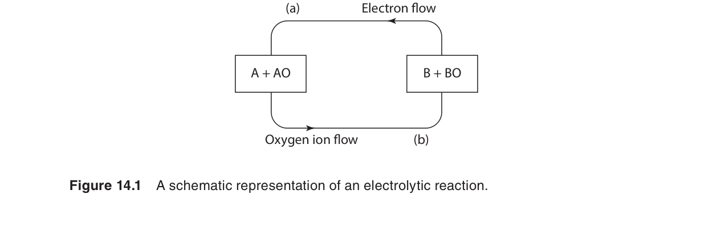
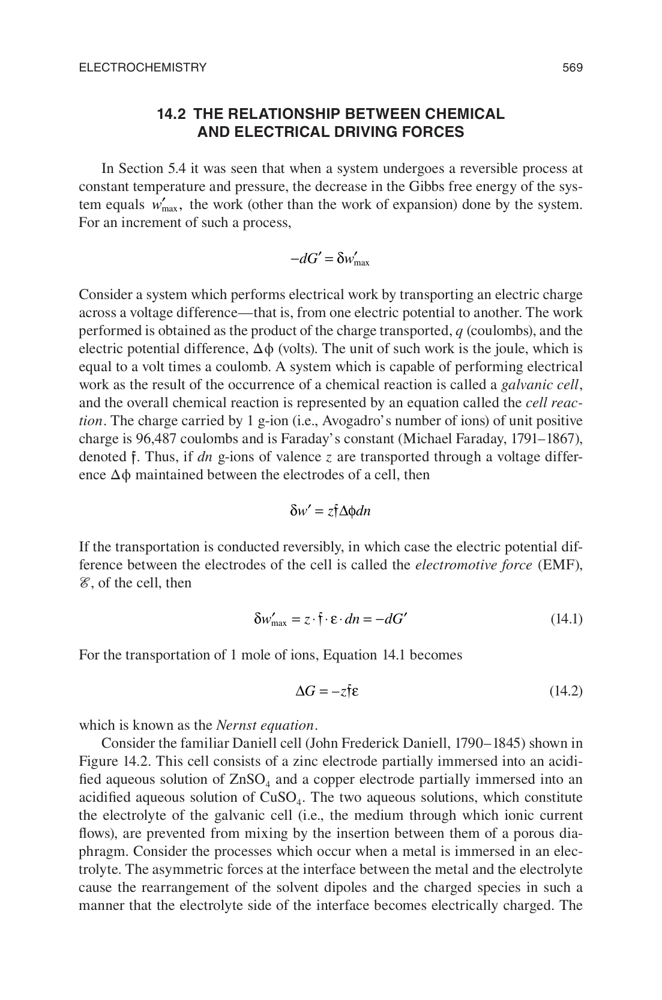
基本橋樑：ΔG = −nFℰ
熱力學第一和第二定律告訴我們，在恆溫恆壓下，一個系統所能做的最大非體積功（non-pV work）等於其吉布斯自由能的減少：wmax,非pV = −ΔG。在電化學系統中，這個非體積功就是電功。當 n 莫耳的電子在電位差 ℰ 下通過時，所作的電功為：
因此，對於一個可逆運行的電化學電池，其吉布斯自由能變化與電動勢之間的關係為：
其中 n 為反應中轉移的電子莫耳數，F = 96,485 C/mol 為法拉第常數（即一莫耳電子所帶的電荷量），ℰ 為電池的電動勢（單位：伏特 V）。注意：若 ℰ 以伏特表示，則 nFℰ 的單位為 J/mol（因為 1 C·V = 1 J）。
此式的物理意義極為深刻：一個自發的化學反應（ΔG < 0）對應 ℰ > 0，即電池可輸出正電壓；而若 ΔG > 0（非自發），則 ℰ < 0，表示需要外加至少 |ℰ| 的電壓才能驅動反應進行。這就是電解過程的熱力學基礎。例如，水的電解需要施加至少 1.23 V 的電壓（在標準條件下），因為水分解反應的 ΔG° = +237.2 kJ/mol，對應 ℰ° = −1.23 V。
以 Daniell 電池為例：Zn(s) + Cu2+(aq) → Zn2+(aq) + Cu(s)。此反應中 n = 2，在標準條件下 ℰ° = 1.10 V，因此 ΔG° = −2 × 96,485 × 1.10 = −212.3 kJ/mol。這說明該反應在標準條件下是高度自發的。
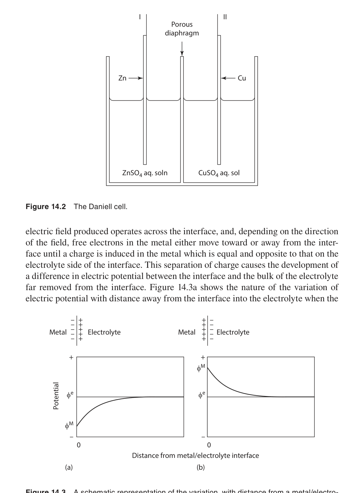
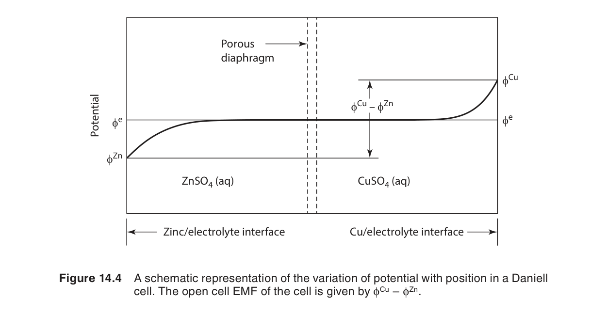
更一般地，對於任意非標準條件下的反應，我們有 ΔG = ΔG° + RT ln Q，代入 ΔG = −nFℰ 及 ΔG° = −nFℰ°，即可得到能斯特方程式。此推導將化學反應的質量作用定律與電化學量測直接聯繫起來，是本章後續所有分析的基礎。
自編概念例：由電位判斷自發方向
若某電池反應有 $n=2$、$\mathcal{E}=0.50\ \text{V}$，則 $\Delta G=-nF\mathcal{E}=-2(96485)(0.50)\approx-96.5\ \text{kJ/mol reaction}$。負號表示依照所寫電池反應方向自發。
14.3 濃度對電動勢的影響——能斯特方程式
對於一般化學反應 aA + bB ⇌ cC + dD，其吉布斯自由能變化可寫為：
代入 ΔG = −nFℰ 和 ΔG° = −nFℰ°，得：
這就是著名的能斯特方程式（Nernst equation），由德國物理化學家 Walther Nernst 於 1889 年提出。在 298 K 下，使用常用對數（log10）表示：
📐 推導：能斯特方程式（Nernst Equation Derivation）
從兩個基本熱力學關係出發：
ΔG = ΔG° + RT ln Q
其中 Q 為反應商（reaction quotient），對於反應 aA + bB ⇌ cC + dD：
Q = (aCc · aDd) / (aAa · aBb)
ΔG = −nFℰ（非標準條件）
ΔG° = −nFℰ°（標準條件）
此關係來自於：可逆電池所做的最大電功 welec = nFℰ 必須等於吉布斯自由能的減少 −ΔG。
−nFℰ = −nFℰ° + RT ln Q
兩邊同時除以 −nF：
在 298 K 下，RT/F = (8.314 × 298.15) / 96,485 = 0.02569 V。轉換為常用對數（log10）：
物理意義：能斯特方程式表明，電池的電動勢取決於 (a) 反應的固有傾向（ℰ°）和 (b) 反應物與產物的活度比（Q 項）。當產物積累或反應物消耗（Q 增大），驅動力降低，ℰ 下降——這是電池放電過程中電壓逐漸衰減的熱力學根源。當 ℰ = 0（電池「耗盡」），系統達到化學平衡，此時 Q = K。
能斯特方程式的深入理解
能斯特方程式告訴我們，電池的電動勢取決於兩個因素：(1) 標準電動勢 ℰ°（由反應的本質決定，即標準吉布斯自由能變），以及 (2) 反應物與產物的活度（濃度）之比 Q。當 Q = 1（所有物質處於標準狀態）時，ℰ = ℰ°。當產物濃度增加或反應物濃度減少（Q 增大）時，ℰ 降低；反之則 ℰ 升高。這與勒沙特列原理（Le Chatelier's principle）完全一致。
當電池達到平衡時，ℰ = 0，此時 Q = K（平衡常數），因此：
這提供了一個由電化學量測獲取平衡常數的極其強大的方法。例如，若某反應的 ℰ° = +0.50 V 且 n = 2，在 298 K 下：ln K = (2 × 96,485 × 0.50) / (8.314 × 298) = 38.9，從而 K ≈ 8 × 1016。如此巨大的平衡常數無法通過常規的濃度分析法測定，但電化學方法卻可輕鬆獲得。
• Q 的正確寫法：Q 與化學反應的書寫方式相對應。若反應式乘以係數，n 也隨之改變，但 ℰ 保持不變（因為 ℰ 是強度量）。
• 純固體與純液體：其活度定義為 1，不出現在 Q 中。
• 氣體：以分壓（通常以 bar 或 atm 為單位，除以標準壓力）表示。在電化學中常使用 fugacity ≈ pressure。
• 溶質：以活度（約等於濃度 mol/L，稀溶液中）表示。對於電解質，需使用平均離子活度（見 §14.8）。
• 電子：不出現在 Q 中（電子通過外部電路傳遞，不作為溶液中的物種）。
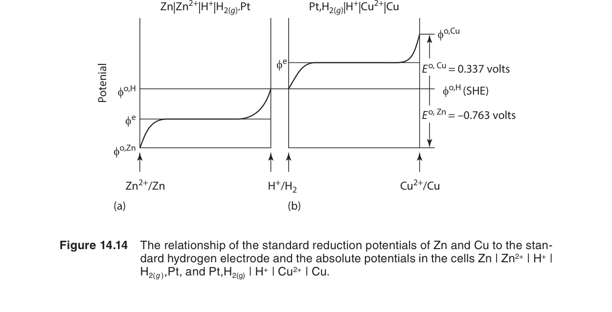
自編概念例：濃度改變造成 59 mV 位移
在 298 K、$n=1$ 時，若反應商 $Q$ 增加 10 倍，$\mathcal{E}$ 會降低 $0.05916\ \text{V}$。若 $n=2$，同樣的十倍改變只造成約 $0.02958\ \text{V}$ 位移。
14.4 生成電池 (Formation Cells)
生成電池是一種特殊的電化學電池，其總反應為由元素生成某種化合物。在這種電池中，測得的電動勢 ℰ 直接對應該化合物的標準生成吉布斯自由能：
Gaskell 以 AgCl 的生成電池為經典範例。考慮以下電池：
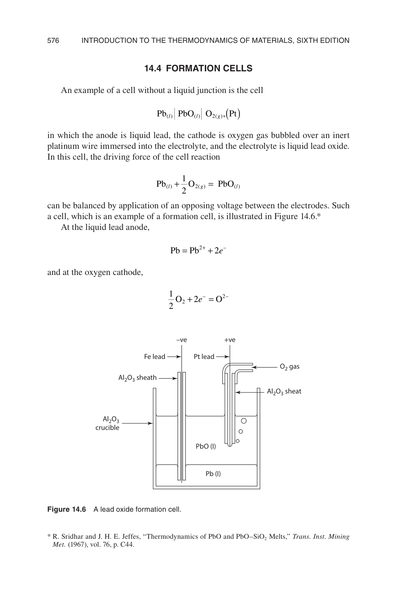
此電池的總反應為：Ag(s) + ½Cl2(g) → AgCl(s)，即 AgCl 的生成反應。量測此電池的標準電動勢 ℰ° = +1.136 V（在 298 K），由於 n = 1，可得：
此方法對於許多金屬氧化物、硫化物、鹵化物的熱力學數據測定具有重大意義。與量熱法相比，電化學方法通常更為精確且操作更為簡便。在固態電化學中，使用固體電解質（如氧化鋯 ZrO2 或氧化釷 ThO2）可以在高溫下構建生成電池，從而測定高熔點化合物（如氧化物、矽化物）的生成自由能。
生成電池的強處在於它把難以直接量測的化合物生成自由能轉成可精密量測的可逆電壓。只要電解質只傳導指定離子，電池反應就可被設計成與目標生成反應完全相同。
自編概念例：由生成電池求 $\Delta G_f^\circ$
若某氧化物生成電池在標準態下量得 $\mathcal{E}^\circ=1.20\ \text{V}$，且反應轉移 $n=4$ mol 電子，則 $\Delta G_f^\circ=-4F(1.20)\approx-463\ \text{kJ/mol reaction}$。
14.5 濃差電池 (Concentration Cells)
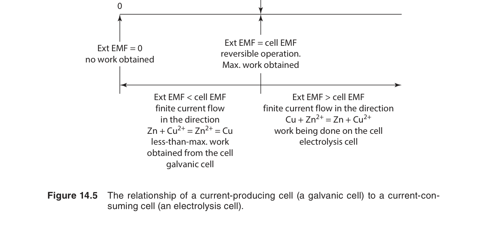
濃差電池是一種特殊的電化學電池，其兩個電極在化學上完全相同，但處於不同濃度（或分壓）的電解質或氣體環境中。由於兩側的化學勢不同，電池產生電動勢。對於電極濃差電池（兩個相同金屬電極浸入不同濃度的同一金屬離子溶液中），其電動勢由能斯特方程式給出：
其中 a+I 和 a+II 分別為兩個半電池中的離子活度。值得注意的是，濃差電池的 ℰ° = 0（因為兩個半反應相同），其電動勢完全來自於濃度差異所產生的混合吉布斯自由能。
氧氣濃差電池與氧化鋯傳感器
在工業和實驗室中最為重要的濃差電池之一是氧氣濃差電池，它使用固體電解質——穩定化氧化鋯（yttria-stabilized zirconia, YSZ）。在高溫下（通常 > 600°C），ZrO2 中的氧離子 O2− 具有可觀的導電性。電池結構為：
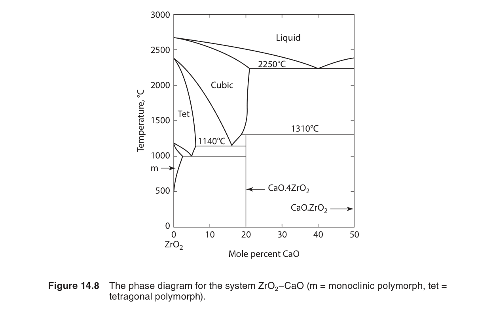
電池反應為：O2(pref) → O2(psample)，即氧氣從高壓側「遷移」到低壓側。此反應的 ΔG 完全來自混合自由能，n = 4（每個 O2 分子涉及 4 個電子的轉移：O2 + 4e− → 2O2−），因此能斯特方程式為：
在 1000 K 下，RT/4F = (8.314×1000)/(4×96485) = 0.02155 V。若參考側為空氣（pref = 0.21 bar），則可由 ℰ 直接計算待測氣體中的氧分壓。這一原理廣泛應用於：
- 汽車氧傳感器（lambda sensor）：監測引擎廢氣中的氧含量，用於精確控制空燃比，以實現最佳燃燒效率和最低污染物排放。
- 鋼鐵冶煉：在轉爐或電弧爐中實時監測鋼液中溶解氧含量，控制脫氧過程。
- 熱處理氣氛控制：在滲碳、氮化等表面處理過程中精確控制爐內氧分壓。
- 核反應堆：監測冷卻劑（液態金屬）中的氧含量以防止腐蝕。
另一類濃差電池是電解質濃差電池，其中兩個半電池含有不同濃度的同一電解質，通過鹽橋連接。這種電池的電動勢還涉及液接電位（liquid junction potential），其理論處理較為複雜，Gaskell 對此有扼要討論。
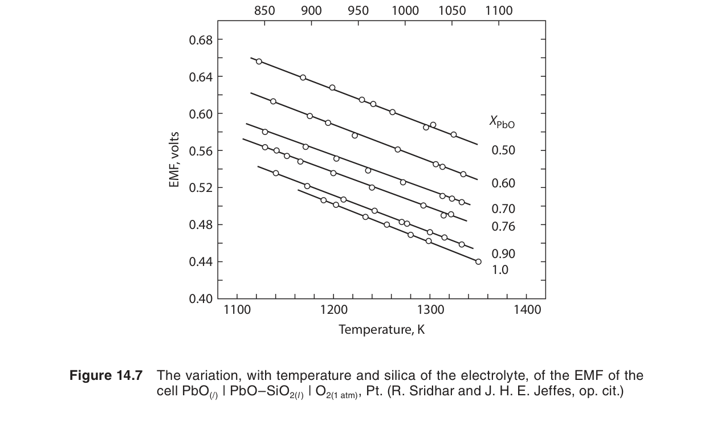
自編概念例：氧氣濃差電池方向
若氧化鋯電池兩側氧分壓分別為 $P_{O_2}^{\text{ref}}$ 與 $P_{O_2}^{\text{sample}}$，電壓與 $\ln(P_{O_2}^{\text{ref}}/P_{O_2}^{\text{sample}})$ 成正比。樣品氧分壓越低，氧化學勢差越大，量得電壓也越大。
14.6 電動勢的溫度係數
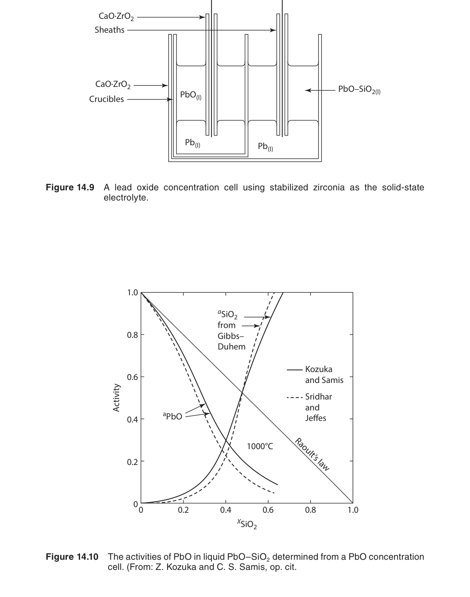
從基本熱力學關係 (∂G/∂T)P = −S，以及 ΔG = −nFℰ，我們可得：
因此：
這是電化學熱力學中一個極其重要的關係式：通過量測電池電動勢隨溫度的變化率，可以直接獲得反應的熵變。這一方法的精確度遠高於量熱法測熵變（後者需量測熱容從 0 K 到 T 的積分）。
📐 推導：由基本熱力學推導 ΔS = nF(∂ℰ/∂T)P
從熱力學基本關係出發進行嚴謹推導：
dG = −S dT + V dP + Σμi dni
在恆壓條件下（dP = 0）且組成固定時，偏導數為：
(∂G/∂T)P,n = −S
ΔG = Σνi μi（產物 − 反應物）
(∂ΔG/∂T)P = −ΔS
這是 Maxwell 關係式 (∂G/∂T)P = −S 對反應系統的推廣（參見第5章）。
ΔG = −nFℰ（恆溫恆壓下的可逆電化學過程）
對此式在恆壓下對溫度求導：
(∂ΔG/∂T)P = −nF (∂ℰ/∂T)P
−ΔS = −nF (∂ℰ/∂T)P
關鍵洞察：此推導展示了熱力學的優雅之處——通過簡單的量測（ℰ 對 T 的斜率），即可獲得通常難以直接量測的熵變。這是電化學方法優於量熱法的核心原因。需要注意的是，此關係假設 n 不隨溫度變化（即反應計量不變），且 ℰ 是在可逆條件下量測的平衡電位。
由電化學量測獲取反應焓變
結合 ΔG = ΔH − TΔS 以及 ΔG = −nFℰ、ΔS = nF(∂ℰ/∂T)，我們可得到著名的吉布斯-亥姆霍茲方程式（Gibbs-Helmholtz equation）應用於電化學系統的形式：
📐 推導：由電化學量測求反應焓變（Gibbs-Helmholtz 形式）
從熱力學基本關係出發，導出電化學可量測量表示的 ΔH：
ΔG = ΔH − TΔS
重新排列：ΔH = ΔG + TΔS
ΔG = −nFℰ
ΔS = nF (∂ℰ/∂T)P（由上節推導得出）
ΔH = −nFℰ + T · nF (∂ℰ/∂T)P
ΔH = −nFℰ + nFT (∂ℰ/∂T)P
物理意義：此方程式揭示了電化學量測的強大之處——僅需量測 ℰ 和 (∂ℰ/∂T)，無需任何量熱實驗，即可同時獲得 ΔG、ΔS 和 ΔH。三者的關係為：
• ΔS = nF(∂ℰ/∂T)（來自 ℰ-T 曲線的斜率）
• ΔH = ΔG + TΔS（由前兩者計算得出）
• qrev = TΔS（可逆熱效應）
注意：當 (∂ℰ/∂T) 很小時（如許多固-固反應），ΔH ≈ ΔG ≈ −nFℰ，此時電化學量測直接給出焓變。而當 (∂ℰ/∂T) 較大時，ΔH 和 ΔG 可能差異顯著——這在燃料電池的熱管理設計中至關重要。
此式的意義在於：僅通過電化學量測（ℰ 和 ∂ℰ/∂T），即可同時獲得反應的 ΔG、ΔS 和 ΔH。這種「一式三得」的特性使電化學方法成為熱力學數據測定的黃金標準。
• (∂ℰ/∂T) > 0：ΔS > 0，反應導致系統熵增加（通常因為反應生成更多氣體分子或溶液中的離子）。電池在運行中從環境吸熱（若在絕熱條件下運行，電池會冷卻）。
• (∂ℰ/∂T) < 0：ΔS < 0，反應導致系統熵減少。電池在運行中向環境放熱。
• (∂ℰ/∂T) ≈ 0：ΔS ≈ 0，此時 ΔH ≈ ΔG ≈ −nFℰ。許多涉及純固體和純液體的反應具有很小的熵變，因此 ℰ 幾乎不隨溫度變化。
以 Daniell 電池為例：Zn + Cu2+ → Zn2+ + Cu。在 298 K 附近，(∂ℰ/∂T) ≈ −0.0001 V/K。代入得 ΔS = 2 × 96,485 × (−0.0001) = −19.3 J/(mol·K)，負值合理，因為反應中離子從 Cu2+ 變為 Zn2+（水合熵不同）。ΔH = −2×96,485×[1.10 − 298×(−0.0001)] = −218.0 kJ/mol，與量熱法測得的 −218.7 kJ/mol 高度吻合。這一例子說明了電化學方法的可靠性。
自編概念例：由溫度係數判斷熵變
若 $n=1$ 且 $(\partial\mathcal{E}/\partial T)_P=+2.0\times10^{-4}\ \text{V/K}$，則 $\Delta S=nF(\partial\mathcal{E}/\partial T)\approx19.3\ \text{J/mol K}$。正斜率代表反應熵變為正。
14.7 熱效應 (Thermal Energy Effects)
對於一個可逆運行的電化學電池（電流趨近於零），從熱力學第二定律可知可逆熱效應為：
此式說明：可逆電池在運行中與環境交換的熱量直接取決於其電動勢的溫度係數。當 (∂ℰ/∂T) > 0 時，電池從環境吸收熱量（qrev > 0）；當 (∂ℰ/∂T) < 0 時，電池向環境釋放熱量（qrev < 0）。
需要注意的是，實際電池在放電（有電流）時，除了可逆熱效應外，還會因內部電阻而產生不可逆的焦耳熱（I2R 熱）。在電池設計和熱管理中，這兩種熱效應都必須納入考量。對於高功率鋰離子電池組，熱管理是確保安全和壽命的關鍵技術。
Gaskell 還討論了電池的能量效率概念。在恆溫恆壓下，電池所做的最大電功為 −ΔG，而反應的總能量變化為 −ΔH。因此電池的熱力學效率（理想效率）定義為：
大多數電池反應的 |ΔG| 小於 |ΔH|（因為 TΔS 項通常為負或較小），所以理想熱力學效率通常小於 1。但值得注意的是：若 (∂ℰ/∂T) > 0（即 ΔS > 0），則 ΔG = ΔH − TΔS，可能出現 |ΔG| > |ΔH| 的情況，此時電池的理想效率大於 1——這並非違反能量守恆，而是因為電池從環境吸收了額外的熱量轉化為電功。燃料電池在低溫運行時常具有此特性。
自編概念例：可逆熱的方向
若放電反應 $\Delta S>0$，可逆熱項 $T\Delta S$ 代表系統可從環境吸熱；若 $\Delta S<0$，可逆過程會放熱。實際電池還要再加上 $I^2R$ 的不可逆熱。
14.8 水溶液熱力學
離子活度與平均離子活度係數
在電解質溶液中，溶質以離子形式存在。對於強電解質 Mν+Xν−，其在水中完全解離為 ν+ 個陽離子 Mz+ 和 ν− 個陰離子 Xz−。由於無法單獨量測單一離子的活度（溶液始終保持電中性），我們定義平均離子活度 a± 和平均離子活度係數 γ±：
其中 ν = ν+ + ν− 為每分子電解質解離產生的總離子數。例如，對於 CaCl2（ν+=1, ν−=2, ν=3），平均離子活度 a± = (aCa2+ · aCl−2)1/3。
電解質溶液的化學勢則表示為所有離子貢獻之和：
其中 μ± = μ±° + RT ln a± 為平均離子化學勢。這一框架使得我們可以將電解質視為單一物種進行熱力學處理，是理解電化學電池中濃度效應的基礎。（有關活度與化學勢的詳細討論，請參閱第9章。）
德拜-休克爾極限定律 (Debye-Hückel Limiting Law)
在稀溶液中，離子間的靜電交互作用是導致活度係數偏離 1 的主要原因。德拜和休克爾於 1923 年提出了電解質溶液的離子氛圍理論，得到德拜-休克爾極限定律：
其中 I 為溶液的離子強度（ionic strength）：
mi 為離子 i 的質量莫耳濃度（mol/kg），zi 為其電荷數。A 為與溶劑和溫度相關的常數：對於 298 K 下的水溶液，A ≈ 0.509 (kg/mol)1/2。
| 電解質類型 | 範例 | |z+z−| | 適用範圍 (I / mol/kg) |
|---|---|---|---|
| 1:1 | NaCl, KCl, HCl | 1 | I ≲ 0.01 |
| 1:2 / 2:1 | CaCl2, Na2SO4 | 2 | I ≲ 0.005 |
| 2:2 | CuSO4, MgSO4 | 4 | I ≲ 0.001 |
| 1:3 / 3:1 | AlCl3, Na3PO4 | 3 | I ≲ 0.002 |
Gaskell 強調了活度係數在電化學計算中的重要性：能斯特方程式中的 Q 必須使用活度而非濃度。在稀溶液中，γ± ≈ 1，可用濃度近似；但在實際電化學系統中（如電池電解質、海水、生物流體），離子強度往往不低，忽略活度係數可能導致顯著誤差。
自編概念例：離子強度如何影響活度係數
同為 0.01 molal 溶液，1:1 電解質的離子強度較低，2:2 電解質因電荷平方項而離子強度更高，所以 $\gamma_\pm$ 偏離 1 更明顯。這也是 Debye-Huckel 式中電荷數乘積會出現的原因。
14.9 標準還原電位
標準氫電極與電化學序列
由於無法單獨量測單一電極的絕對電位，電化學領域約定以標準氫電極（Standard Hydrogen Electrode, SHE）作為參考點，將其電位定義為 ℰ° = 0 V（在所有溫度下）。SHE 的構成如下：
其半反應為：2H+(aq) + 2e− → H2(g)，ℰ° ≡ 0 V。（注意：在電化學中，半反應一律寫成還原形式，即氧化態物種獲得電子。）
以此為基準，可以測量任何其他半反應的標準還原電位 ℰ°。以下為選錄的一些重要標準還原電位（298 K，水溶液）：
| 半反應（還原） | ℰ° / V | n |
|---|---|---|
| F2 + 2e− → 2F− | +2.866 | 2 |
| O2 + 4H+ + 4e− → 2H2O | +1.229 | 4 |
| Cl2 + 2e− → 2Cl− | +1.358 | 2 |
| Ag+ + e− → Ag(s) | +0.799 | 1 |
| Fe3+ + e− → Fe2+ | +0.771 | 1 |
| Cu2+ + 2e− → Cu(s) | +0.337 | 2 |
| 2H+ + 2e− → H2 | 0.000 | 2 |
| Pb2+ + 2e− → Pb(s) | −0.126 | 2 |
| Ni2+ + 2e− → Ni(s) | −0.250 | 2 |
| Fe2+ + 2e− → Fe(s) | −0.440 | 2 |
| Zn2+ + 2e− → Zn(s) | −0.763 | 2 |
| Al3+ + 3e− → Al(s) | −1.662 | 3 |
| Mg2+ + 2e− → Mg(s) | −2.363 | 2 |
| Li+ + e− → Li(s) | −3.045 | 1 |
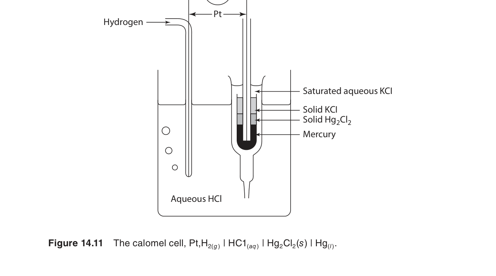
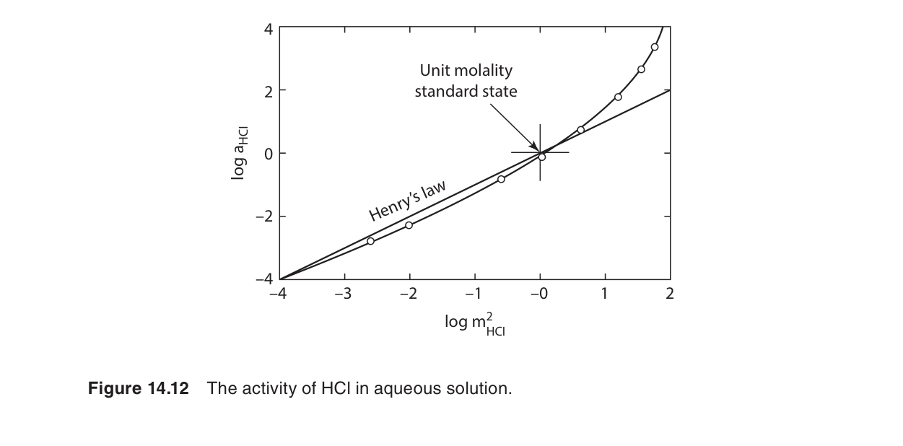
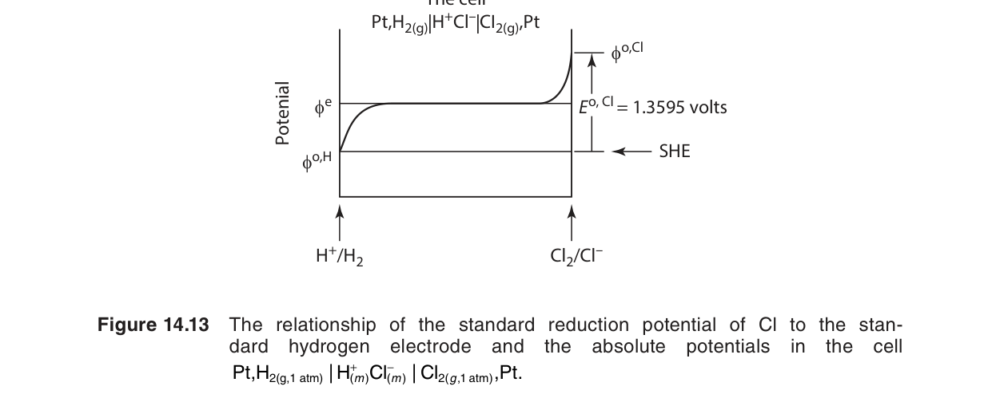
由任何兩個半反應組成的完整電池，其標準電動勢為：
其中陰極（cathode）發生還原反應（ℰ° 較高者），陽極（anode）發生氧化反應（ℰ° 較低者）。例如，對於 Daniell 電池：陰極為 Cu2+/Cu（ℰ° = +0.337 V），陽極為 Zn2+/Zn（ℰ° = −0.763 V），因此 ℰ°cell = 0.337 − (−0.763) = +1.100 V。
• ℰ° 越正，物種的氧化態越容易被還原，是強氧化劑（如 F2、O2）。
• ℰ° 越負，物種的還原態越容易被氧化，是強還原劑（如 Li、Mg、Al）。
• 在自發電池中，ℰ° 較高者為陰極，較低者為陽極。ℰ°cell > 0 保證反應自發。
• ℰ° 是強度量——不論反應式乘以何係數，ℰ° 保持不變。但 ΔG° = −nFℰ° 隨著 n 的變化而改變。
• 在非標準條件下（濃度 ≠ 1, 分壓 ≠ 1 bar），需使用能斯特方程式進行修正。
標準還原電位表還可用於預測氧化還原反應的方向以及判斷金屬的腐蝕傾向。例如，鐵的 ℰ°(Fe2+/Fe) = −0.440 V 比銅 ℰ°(Cu2+/Cu) = +0.337 V 更負，因此在銅離子溶液中，鐵會自發溶解（腐蝕）並沉積出銅：Fe + Cu2+ → Fe2+ + Cu，ℰ°cell = 0.337 − (−0.440) = +0.777 V。此原理是理解電偶腐蝕（galvanic corrosion）的基礎。
自編概念例：由還原電位判斷電偶腐蝕
若金屬 A 的還原電位比金屬 B 更負，兩者電接觸且在同一電解質中時，A 較容易作為陽極溶解，B 較容易被保護。這是犧牲陽極保護的基本原理。
14.10 普爾貝圖 (Pourbaix Diagrams)
電位-pH 圖的基本原理
普爾貝圖（Pourbaix diagram），又稱為電位-pH 圖（potential-pH diagram）或優勢區域圖（predominance area diagram），由比利時化學家 Marcel Pourbaix 於 1930 年代提出。它是一張以電位 ℰ（縱軸）對 pH（橫軸）作圖的二維相圖，用於顯示在水溶液環境中，某一金屬元素的各種化學形態（金屬、氧化物、氫氧化物、溶解離子）在給定 ℰ 和 pH 條件下的熱力學穩定區域。普爾貝圖是腐蝕科學與防護工程中最為重要的工具之一。
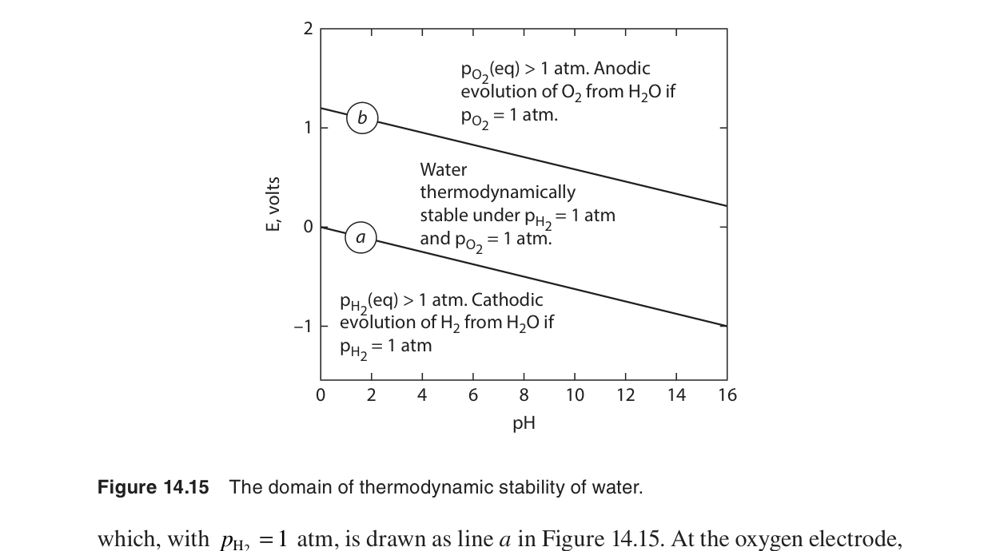
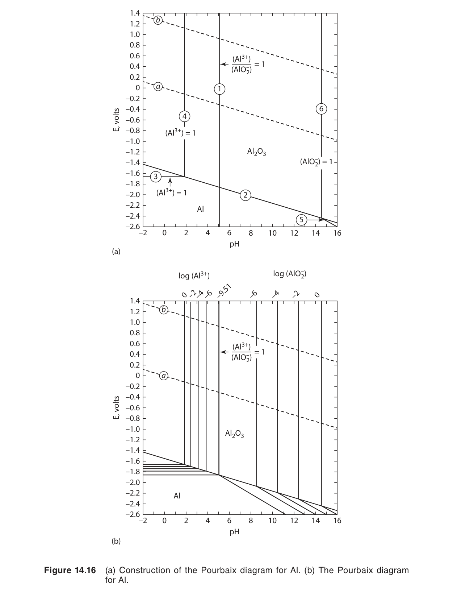
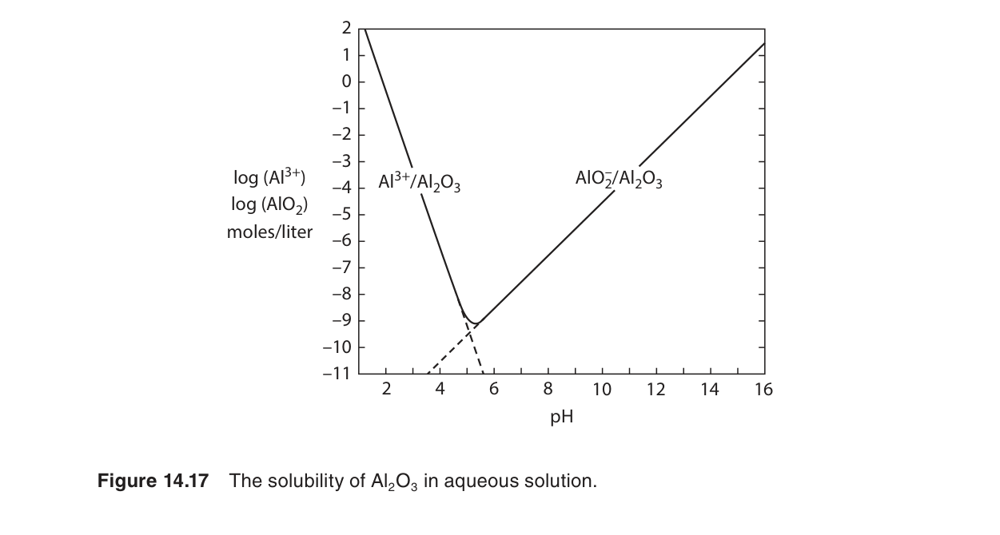
普爾貝圖中的邊界線分為三種類型，每種對應不同類型的化學平衡：
🔍 三種邊界線的詳細分析
類型 1：水平邊界線（Horizontal Boundaries）——僅涉及電子轉移
此類邊界對應純氧化還原反應，無 H⁺ 或 OH⁻ 參與。反應通式：
Mn+ + n e− → M(s)
應用能斯特方程式：ℰ = ℰ° + (RT/nF) ln aMn+。在 298 K 下：
ℰ = ℰ° + (0.05916/n) log aMn+
此方程式不包含 pH 項，因此在普爾貝圖上表現為水平線（ℰ 與 pH 無關）。線的位置取決於金屬離子活度：活度越低（越稀），線越向下移動（ℰ 越負），免疫區越大。Gaskell 的範例：Fe²⁺ + 2e⁻ → Fe，ℰ = −0.440 + (0.05916/2) log aFe²⁺。
類型 2：垂直邊界線（Vertical Boundaries）——僅涉及質子轉移
此類邊界對應純酸鹼反應（水解/沉澱平衡），無電子轉移。反應通式：
M(OH)n(s) + n H+ ⇌ Mn+ + n H2O
平衡常數 K = aMn+ / (aH+)n。取對數得：
pH = −(1/n) log K − (1/n) log aMn+
此方程式不包含 ℰ 項，因此在普爾貝圖上表現為垂直線（pH 固定，與 ℰ 無關）。給定金屬離子活度（通常取 a = 10⁻⁶ 作為「無腐蝕」的判據），可計算出沉澱發生的臨界 pH。Gaskell 的範例：Fe³⁺ + 3H₂O → Fe(OH)₃ + 3H⁺。
類型 3：斜邊界線（Sloping Boundaries）——同時涉及電子和質子轉移
此類邊界對應電化學-酸鹼耦合反應，反應通式：
a Ox + m H+ + n e− → b Red + c H2O
應用能斯特方程式：
ℰ = ℰ° − (0.05916/n) log (aRedb / aOxa) − (0.05916 m/n) pH
斜率 = −(0.05916 × m)/n（單位：V/pH）。斜率的大小和符號取決於反應中 H⁺ 與電子的計量比 m/n。若 m/n 較大（涉及較多質子），斜率較陡。Gaskell 的範例：Fe₂O₃ + 6H⁺ + 2e⁻ → 2Fe²⁺ + 3H₂O，斜率 = −0.177 V/pH。
📐 推導：普爾貝圖邊界線方程式的計算方法
以 Fe-H₂O 系統中 Fe²⁺/Fe₃O₄ 邊界為例，系統展示如何將能斯特方程式轉化為 ℰ-pH 關係式。
但更常用的形式是 Fe₃O₄(s) + 8H⁺ + 2e⁻ → 3Fe²⁺ + 4H₂O
ℰ = ℰ° − (RT/nF) ln (aFe²⁺³ / aH⁺⁸)
（Fe₃O₄ 和 H₂O 為純物質，活度 = 1）
aH⁺ = 10−pH，因此 aH⁺⁸ = 10−8pH
ln(aH⁺⁸) = −8 × 2.303 × pH
ℰ = ℰ° − (0.05916/2) [3 log aFe²⁺ − 8 log aH⁺]
ℰ = ℰ° − (0.05916/2) [3 log aFe²⁺ + 8 pH]
ℰ = ℰ° − 0.08874 log aFe²⁺ − 0.2366 pH
斜率 = −0.2366 V/pH（由 m/n = 8/2 = 4 決定）
通用公式：對於反應 a Ox + m H⁺ + n e⁻ → b Red + c H₂O，普爾貝圖邊界線方程式為 ℰ = ℰ°′ − (0.05916 m/n) pH，其中 ℰ°′ 包含了活度項的貢獻（在給定離子活度下為常數）。此推導方法可應用於任何普爾貝圖中任何類型 3 邊界的構建。
水的穩定區域與腐蝕科學應用
每一張普爾貝圖都包含兩條關鍵的虛線，標示水的熱力學穩定區域：
- 下邊界（a 線）：2H+ + 2e− → H2。當 ℰ 低於此線時，水被還原產生氫氣。ℰ = −0.05916 pH（在 pH2 = 1 bar 下）。
- 上邊界（b 線）：O2 + 4H+ + 4e− → 2H2O。當 ℰ 高於此線時，水被氧化產生氧氣。ℰ = 1.229 − 0.05916 pH（在 pO2 = 1 bar 下）。
💧 水穩定區域的深層理解
水的穩定區域由兩條虛線界定，其間距在 298 K 下恆為 1.229 V（任意 pH 下兩線平行，因為兩個反應的 m/n 比均為 1）。關鍵含義：
a 線以下（ℰ 低於 H₂ 析出線）：熱力學上水不穩定
水傾向被還原為 H₂ 氣體。任何金屬若其穩定區域位於 a 線以下，則該金屬可從水中置換出氫氣（如鹼金屬 Na、K，以及 Mg、Al 等活潑金屬）。在腐蝕科學中，這意味著金屬在該區域會伴隨析氫腐蝕。
b 線以上（ℰ 高於 O₂ 析出線）：熱力學上水不穩定
水傾向被氧化為 O₂ 氣體。在此區域，理論上水會分解產生氧氣。實際上，由於 O₂ 析出反應的動力學過電位較大，水在略高於此線的電位下仍可能亞穩存在。此區域對應強氧化性環境。
a 線與 b 線之間：水的熱力學穩定區域
在此區域內，H₂O 在熱力學上穩定，不會自發分解為 H₂ 或 O₂。大多數自然水體和工業水溶液的 ℰ-pH 條件落在此區域內。對於腐蝕防護，目標是使金屬在此區域內處於免疫區或鈍化區。
在這兩條線之間的區域，水在熱力學上是穩定的。普爾貝圖上通常標示三個特徵區域：
- 免疫區（Immunity）：金屬處於熱力學穩定狀態，不會發生腐蝕。例如鐵在足夠低的電位下以 Fe(s) 形式穩定存在。
- 腐蝕區（Corrosion）：金屬以可溶性離子形式穩定存在，會持續溶解。例如 Fe2+ 或 Fe3+ 的穩定區域。
- 鈍化區（Passivation）：金屬表面形成一層緻密的氧化物或氫氧化物薄膜（如 Fe2O3、Fe3O4），阻止進一步腐蝕。這是許多工程合金（如不銹鋼）耐腐蝕的基礎。
🔬 鐵-水系統腐蝕區域詳解
以圖 14.15（Fe-H₂O 普爾貝圖）為基礎，以下是各特徵區域的詳細分析：
區域 1：免疫區（Fe 穩定，ℰ 低於約 −0.6 V，寬廣 pH 範圍）
在此區域，金屬鐵是熱力學穩定的唯一凝聚相。任何鐵離子或氧化物都會自發還原為金屬鐵。實現免疫區的策略：陰極保護——通過外加電流或犧牲陽極（如 Zn、Mg）將鋼鐵結構的電位拉低至此區域。
區域 2：酸性腐蝕區（Fe²⁺ 穩定，低 pH，中等 ℰ）
在酸性環境（pH 小於約 6）和中等電位下，Fe²⁺ 為穩定物種。鐵以亞鐵離子形式溶解：Fe → Fe²⁺ + 2e⁻。此即典型的酸腐蝕（如鋼鐵在酸洗過程中）。腐蝕產物為可溶性 Fe²⁺，無保護性固體膜形成。
區域 3：強氧化性酸性腐蝕區（Fe³⁺ 穩定，極低 pH，高 ℰ）
在強酸性（pH 小於 0）和高電位條件下，Fe³⁺ 為穩定物種。此區域通常超出自然環境範圍，但在強氧化性酸（如濃硝酸、濃硫酸）的化學處理過程中可能遇到。
區域 4：鈍化區（Fe₃O₄ / Fe₂O₃ 穩定，中等至高 pH 及中等 ℰ）
這是最重要的區域——在 pH 約 6-14 和 ℰ 約 −0.2 至 +1.0 V 範圍內，鐵的氧化物（Fe₃O₄ 在較低 ℰ，Fe₂O₃ 在較高 ℰ）為穩定固相。這些氧化物形成緻密的保護膜（厚度僅數奈米至數微米），有效阻止進一步腐蝕。不銹鋼的耐蝕性即源於合金中的 Cr 元素促進了更穩定的鈍化膜（Cr₂O₃）的形成。注意：氯離子（Cl⁻）可局部破壞鈍化膜，導致點蝕（pitting corrosion）——此效應在普爾貝圖中無法體現，需藉助實驗數據補充。
區域 5：強鹼性腐蝕區（HFeO₂⁻ 穩定，極高 pH）
在強鹼性條件（pH 大於約 14）下，鐵可形成可溶性的 HFeO₂⁻ 離子（亞鐵酸根），導致鹼性腐蝕。此現象在紙漿工業（kraft process）和某些化學環境中需特別關注。
• 陰極保護（Cathodic Protection）：通過施加外部電壓或連接犧牲陽極（如鋅、鎂），將金屬的電位降低至免疫區。廣泛應用於地下管線、船舶、海上平台。
• 陽極保護（Anodic Protection）：將金屬的電位提升至鈍化區，使其表面形成保護性氧化膜。適用於可鈍化的金屬（如不銹鋼、鈦）在特定電解質中。
• 調節 pH：通過改變環境的酸鹼度，使金屬進入免疫區或鈍化區。例如在鍋爐水中添加鹼性藥劑以提高 pH。
• 添加緩蝕劑（Inhibitors）：在溶液中引入可吸附在金屬表面或促進鈍化膜形成的化學物質。
普爾貝圖本質上是包含電化學變量的相穩定圖。第13章討論的固態相穩定圖（如金屬-氧-硫系統的優勢區域圖）使用 log pO₂ 或 log pS₂ 作為變量，而普爾貝圖使用 ℰ 和 pH。兩者之間存在深刻的類比：
• 在第13章：log pO₂ 對應氧的化學勢 μO₂ = RT ln pO₂
• 在第14章：ℰ 對應電子的電化學勢，pH 對應 H⁺ 的化學勢（μH⁺ = −RT·ln(10)·pH）
將普爾貝圖的坐標轉換（ℰ → −μe⁻/F，pH → −μH⁺/RT·ln(10)），即可得到與第13章完全一致的化學勢圖。這種統一觀點展示了熱力學在不同領域的普適性。
Gaskell 以鐵-水系統的普爾貝圖為例進行了詳細討論。在不同 pH 和電位條件下，鐵可以 Fe(s)、Fe2+、Fe3+、Fe(OH)2、Fe(OH)3、Fe3O4、Fe2O3 等形式存在。每一條邊界線對應一個特定的平衡反應的能斯特方程式。普爾貝圖在濕法冶金（hydrometallurgy）、電化學加工、地質化學以及核廢料處置等領域均有重要應用。
自編概念例：水平線、垂直線與斜線的判讀
若反應只含電子、不含 H$^+$，邊界電位不隨 pH 變化，是水平線；若只含 H$^+$、不含電子，是垂直線；若同時含 H$^+$ 與電子，則依能斯特方程式呈現斜線。
數值計算例題
例題 1：基本 ΔG 與 ℰ 的轉換
問題：某一電池反應轉移 3 個電子，在 298 K 下測得 ℰ = 1.50 V。求該反應的 ΔG（單位 kJ/mol）。若此 ℰ 為標準電動勢 ℰ°，求平衡常數 K。
解答：
ΔG = −nFℰ = −3 × 96,485 × 1.50 = −434,182 J/mol = −434.2 kJ/mol。
平衡常數：ln K = nFℰ°/RT = (3 × 96,485 × 1.50) / (8.314 × 298) = 175.3。
K = e175.3 ≈ 1.2 × 1076。此巨大的平衡常數說明反應極度偏向產物，幾乎完全進行。
例題 2：能斯特方程式的應用
問題：考慮電池 Zn(s) | Zn2+(a=0.01) || Cu2+(a=0.10) | Cu(s)。ℰ°(Cu2+/Cu) = +0.337 V，ℰ°(Zn2+/Zn) = −0.763 V。在 298 K 下計算此電池的電動勢。
解答：
ℰ°cell = 0.337 − (−0.763) = 1.100 V。
電池反應：Zn(s) + Cu2+ → Zn2+ + Cu(s)，n = 2。
Q = aZn2+ / aCu2+ = 0.01/0.10 = 0.10。
ℰ = ℰ° − (0.05916/2) log10(0.10) = 1.100 − 0.02958 × (−1) = 1.100 + 0.0296 = 1.130 V。
電動勢比標準值高，因為反應物 Cu2+ 的活度高於產物 Zn2+，使反應的驅動力增大。
例題 3：由溫度係數求熱力學參數
問題：某一電池在 298 K 下 ℰ = 0.800 V，且 (∂ℰ/∂T)P = −2.5×10−4 V/K，n = 2。計算此電池反應的 ΔG、ΔS、ΔH 和 qrev。
解答：
ΔG = −nFℰ = −2 × 96,485 × 0.800 = −154.4 kJ/mol。
ΔS = nF(∂ℰ/∂T) = 2 × 96,485 × (−2.5×10−4) = −48.2 J/(mol·K)。
ΔH = −nF[ℰ − T(∂ℰ/∂T)] = −2×96,485×[0.800 − 298×(−2.5×10−4)]
= −192,970 × [0.800 + 0.0745] = −192,970 × 0.8745 = −168.8 kJ/mol。
qrev = TΔS = 298 × (−48.2) = −14.4 kJ/mol（電池向環境放熱）。
驗算：ΔH = ΔG + TΔS = −154.4 + (−14.4) = −168.8 kJ/mol ✓。
例題 4：氧氣濃差電池
問題：一個氧化鋯氧氣傳感器在 1000 K 下運行，參考側為空氣（pO2 = 0.21 bar），量測得 ℰ = 0.100 V。求待測側的氧分壓。
解答：
使用能斯特方程式：ℰ = (RT/4F) ln(pref/psample)。
RT/4F = (8.314×1000)/(4×96485) = 0.02155 V。
0.100 = 0.02155 × ln(0.21/psample) → ln(0.21/psample) = 4.64。
0.21/psample = e4.64 = 103.6 → psample = 0.21/103.6 = 2.03×10−3 bar。
此氧分壓極低，表明待測氣體為高度還原性氣氛（如含大量 H2 或 CO 的燃燒產物）。
• 單位一致性：ΔG 以 J/mol 為單位，F = 96,485 C/mol，ℰ 以 V 為單位，RT 以 J/mol 為單位（8.314 × T）。
• 自然對數 vs. 常用對數：能斯特方程式在理論推導中使用 ln（自然對數），對應 RT/F = 0.02569 V（298 K）；在實際計算中常用 log10，對應 0.05916 V。兩者轉換關係：ln x = 2.303 log10 x。
• n 的確定：仔細平衡半反應以確定轉移的電子數。對於涉及 O2 的反應，n 取決於反應的書寫方式（n=4 若生成 2O2−；n=2 若生成 O22− 等）。
• 符號約定：ℰ > 0 對應自發反應（ΔG < 0），ℰ < 0 對應非自發反應（ΔG > 0）。
工業應用
1. 電池技術
電化學電池是將化學能直接轉換為電能的裝置。現代電池技術的發展緊密依賴於本章所述的熱力學原理：
- 鋰離子電池：工作電壓約 3.6–3.8 V，取決於正極材料（如 LiCoO2、LiFePO4）和負極材料（石墨、矽）的電化學電位差。電解質為鋰鹽溶於有機溶劑。熱力學決定了電池的最大理論能量密度，而 ℰ° 與溫度係數影響了電池在高溫/低溫下的表現。
- 燃料電池：氫-氧燃料電池的總反應 H2 + ½O2 → H2O，ℰ° = 1.229 V，理論效率可達 83%（基於 ΔG/ΔH）。實際效率因動力學極化而降低，但熱力學提供了效率上限。
- 液流電池（Redox Flow Battery）：使用釩等氧化還原對（如 V2+/V3+ 和 VO2+/VO2+），ℰ°cell ≈ 1.26 V。其一大優勢是功率與容量可分離設計，適合大規模儲能。
2. 腐蝕與防護
腐蝕本質上是一個電化學過程，涉及金屬的陽極溶解（M → Mn+ + ne−）和陰極反應（通常為氧還原或氫析出）。普爾貝圖提供了腐蝕傾向的熱力學判斷，而實際腐蝕速率則由混合電位理論（mixed potential theory）決定。常見的防護方法包括：
- 犧牲陽極：連接 ℰ° 更負的金屬（如 Mg、Zn、Al）以保護鋼結構。例如船舶的鋅塊、地下管線的鎂陽極。
- 外加電流陰極保護（ICCP）：使用直流電源將被保護結構的電位降至免疫區。廣泛用於長距離管線和海上平台。
- 塗層與緩蝕劑：物理隔離或化學抑制腐蝕反應。
3. 電化學傳感器
基於濃差電池原理的傳感器在工業過程中不可或缺：
- pH 電極：玻璃膜電極通過測量跨玻璃膜的電位差來確定 H+ 活度（pH = −log aH+）。這是典型的離子選擇性電極，其響應遵循能斯特方程式：ℰ = 常數 + (0.05916) log aH+ = 常數 − 0.05916 pH。
- 氧傳感器（Lambda Sensor）：如前所述，基於 YSZ 的氧濃差電池用於汽車廢氣監測。在 λ=1（理論空燃比）附近，ℰ 從約 0.1 V 急劇躍升至約 0.8 V，提供極其靈敏的空燃比檢測。
- 離子選擇性電極（ISE）：針對 Na+、K+、Ca2+、F−、NO3− 等特定離子的電極，廣泛用於水質監測、臨床檢驗和農業分析。
4. 電解與電冶金
電解是施加外部電壓驅動非自發反應的過程，其最低所需電壓由熱力學決定（ℰmin = −ΔG/nF，即分解電壓）。實際操作電壓因過電位（overpotential）和歐姆損失而更高。重要應用包括：
- 鋁的電解冶煉（Hall-Héroult 法）：Al2O3 溶於冰晶石熔鹽中電解，ℰ° ≈ −2.2 V，實際操作電壓約 4.0–4.5 V，能耗極高。
- 氯鹼工業：電解 NaCl 水溶液生產 Cl2、NaOH 和 H2。膜電解槽技術基於對 ℰ° 和能斯特方程式的深入理解進行優化。
- 電鍍與電鑄：利用電解在基材上沉積金屬層，需精確控制電流密度和電解液組成以獲得所需鍍層質量。
與其他章節之關聯
本章的電化學熱力學與全書多個章節有深層的理論聯繫。以下詳列各章節與本章的具體關聯點，幫助建立系統性的知識網絡：
| 章節 | 主題 | 與本章之關聯 |
|---|---|---|
| 第5章 | 吉布斯自由能與基本關係式 | 本章的核心關係式 ΔG = −nFℰ 直接來自第5章關於最大非體積功的討論。第5章的 Maxwell 關係式 (∂G/∂T)P = −S 和吉布斯-亥姆霍茲方程式 (∂(G/T)/∂T)P = −H/T² 是推導 ΔS = nF(∂ℰ/∂T) 和 ΔH = −nF[ℰ − T(∂ℰ/∂T)] 的基礎。第5章中 ΔG 作為化學反應自發性判據的概念，在電化學中被賦予了可直接量測的物理意義（ℰ 的正負直接指示 ΔG 的符號）。 |
| 第9章 | 溶液熱力學與活度 | 本章 §14.8 討論水溶液中離子活度時，直接使用了第9章建立的活度與活度係數概念。平均離子活度係數 γ± 是第9章中逸度/活度框架向電解質溶液的延伸。第9章的 Gibbs-Duhem 方程式在分析電解質溶液的熱力學一致性時亦有應用。能斯特方程式中的 Q 必須使用活度而非濃度——第9章提供了將濃度轉換為活度的理論工具（活度係數模型）。德拜-休克爾極限定律（§14.8）是第9章理想溶液理論向離子溶液的延伸。 |
| 第11章 | 化學反應平衡 | 本章的能斯特方程式直接連結了 ℰ° 與平衡常數 K：ℰ° = (RT/nF) ln K。第11章詳述的平衡常數與 ΔG° 之關係（ΔG° = −RT ln K）在此被賦予了電化學的詮釋。由電化學量測獲取 K 是第11章平衡計算方法的重要補充——特別是用於平衡常數極大（K > 10¹⁰）或極小（K < 10⁻¹⁰）的反應，傳統濃度分析法無法準確測定。此外，第11章的 van't Hoff 方程式（d ln K/dT = ΔH°/RT²）可與電化學溫度係數結合，提供從 ℰ(T) 數據獲取 ΔH° 的另一路徑。 |
| 第10章 | 相平衡與相律 | 普爾貝圖（§14.10）本質上是一種包含電化學變量的相圖。第10章關於相律（F = C − P + 2）、相邊界和物種穩定性的概念在此被擴展到包含電位 ℰ 作為額外自由度的系統中。在普爾貝圖中，自由度增加了一個（電位），因此對於兩相平衡（P=2），在三元系統（金屬-水-電子）中，F = 3 − 2 + 2 = 3 但其中兩個變量（T 和 P）固定，留下 ℰ 和 pH 作為可變量——這正是普爾貝圖的二維性來源。pH 作為 H⁺ 化學勢的一種度量，與 ℰ 共同定義了水溶液中的物種穩定性區域。 |
| 第13章 | 固態反應與相穩定圖 | 氧化鋯（ZrO2）和其他固體電解質（如 ThO2、β-Al2O3）在高溫電化學量測中的應用，與第13章討論的固態缺陷化學密切相關。YSZ 中氧空缺的濃度和遷移率決定了其離子導電性。第13章的相穩定圖（如金屬-氧-硫系統的 log pO₂-log pS₂ 圖）與普爾貝圖在概念上高度類比：前者使用化學勢（log p）作為坐標，後者使用 ℰ 和 pH。兩者皆基於相同的基本原理——在給定化學勢條件下識別最穩定的凝聚相。 |
• 對 活度與活度係數 有疑問 → 複習第9章（溶液熱力學）
• 對 ΔG° 與平衡常數的關係 有疑問 → 複習第11章（反應平衡）
• 對 吉布斯自由能與 Maxwell 關係 有疑問 → 複習第5章（熱力學勢函數）
• 對 相圖與穩定性判據 有疑問 → 複習第10章（相平衡）
• 對 固態電解質與缺陷化學 有疑問 → 複習第13章（固態反應）
• 對 普爾貝圖與相穩定圖的類比 有疑問 → 同時複習第13章（相穩定圖）和 §14.10（普爾貝圖）
常見錯誤
自我檢核
1. 若 $\mathcal{E}>0$，所寫電池反應的 $\Delta G$ 是正還是負？
由 $\Delta G=-nF\mathcal{E}$，當 $n>0$ 且 $\mathcal{E}>0$，$\Delta G<0$，表示所寫方向自發。
2. 298 K、$n=2$ 時，$Q$ 增加 10 倍會讓電位改變多少？
以常用對數寫能斯特式，改變量為 $-(0.05916/2)\log 10=-0.02958\ \text{V}$，也就是電位降低約 29.6 mV。
3. 為什麼 Pourbaix 圖中有些線是斜線？
斜線對應同時含電子與 H$^+$ 的平衡反應。能斯特式中同時出現電位與 pH，因此邊界電位會隨 pH 改變。
4. 電動勢溫度係數可以求哪個熱力學量？
可由 $\Delta S=nF(\partial\mathcal{E}/\partial T)_P$ 求熵變，再結合 $\Delta G=-nF\mathcal{E}$ 求 $\Delta H=\Delta G+T\Delta S$。
延伸學習
- 下一章：第十五章 相變態 會回到材料內部的相變驅動力、成核與成長問題。
- 工程延伸：腐蝕防護、鋰離子電池、固態氧感測器、電解精煉與燃料電池都可用本章公式建立第一層熱力學判斷。
- 資料工具：標準還原電位表、Pourbaix atlas、NIST 熱化學資料與電解質活度模型可協助處理非標準狀態。
章節總結
第14章是 Gaskell《材料熱力學導論》中獨具特色的一章，它將抽象的熱力學函數（ΔG、ΔS、ΔH）與可直接量測的電學量（ℰ、∂ℰ/∂T）建立了定量聯繫。以下是本章的核心知識要點：
- 基本橋樑：ΔG = −nFℰ。這是化學能與電能轉換的核心關係式。自發反應（ΔG < 0）對應 ℰ > 0。
- 能斯特方程式：ℰ = ℰ° − (RT/nF) ln Q。該式描述了濃度（活度）對電池電壓的影響，是電化學中應用最廣泛的方程式。
- 標準電位與平衡常數：ℰ° = (RT/nF) ln K。電化學方法可極其精確地測定平衡常數，即使是極大或極小的 K 值。
- 生成電池：由元素生成化合物的電池，其 ℰ° 直接給出 ΔGf°。
- 濃差電池：電動勢來自濃度差異而非化學反應的差異（ℰ° = 0）。氧化鋯氧傳感器是其最重要的工業應用。
- 溫度係數：(∂ℰ/∂T)P 給出 ΔS（通過 ΔS = nF ∂ℰ/∂T），進而可求得 ΔH。電化學方法是測定反應熱力學參數最精確的方法之一。
- 水溶液熱力學：使用平均離子活度 a± 和平均離子活度係數 γ± 處理電解質溶液。德拜-休克爾極限定律提供稀溶液中 γ± 的理論預測。
- 標準還原電位表：以 SHE 為零點，提供了所有半反應的電位排序——電化學序列。ℰ° 越正表示越強的氧化劑；ℰ° 越負表示越強的還原劑。
- 普爾貝圖：電位-pH 圖直觀地展示了金屬在水溶液中的腐蝕、免疫和鈍化區域，是腐蝕工程的核心工具。
- 熱效應：可逆電池的熱效應 qrev = TΔS = nFT(∂ℰ/∂T)，其符號和大小取決於溫度係數。
• 熟練掌握 ΔG = −nFℰ 與能斯特方程式的計算，特別是 n 的正確確定。
• 理解標準還原電位表中 ℰ° 的符號含義，能正確計算 ℰ°cell = ℰ°cathode − ℰ°anode。
• 能由 ℰ 和 ∂ℰ/∂T 計算 ΔG、ΔS、ΔH。
• 理解普爾貝圖的結構（三種邊界線）和水的穩定區域。
• 能解釋氧化鋯氧傳感器的工作原理並進行相關計算。
• 注意區分自然對數和常用對數在能斯特方程式中的使用（0.02569 V vs. 0.05916 V at 298 K）。
• 記住法拉第常數 F = 96,485 C/mol ≈ 96.5 kC/mol。
— 第14章學習指南完 · Gaskell《Introduction to the Thermodynamics of Materials》· pp. 588–641 —